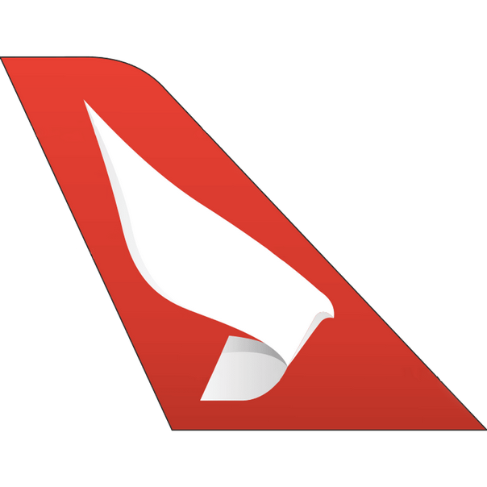
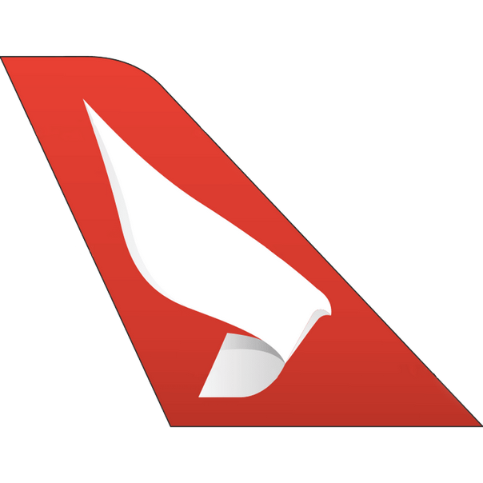

|  |
|  |
|
A Sevenair Air Services, antes chamada Aero VIP, é uma companhia aérea regional portuguesa com sede no Aeródromo de Cascais, no oeste de Lisboa. Opera rotas domésticas, ou seja, no interior de Portugal, porém, também oferece serviços adicionais de aviação e operações não programadas em países terceiros. Faz parte do Grupo Sevenair, um dos maiores grupos aeronáuticos a operar aqui em Portugal. O mesmo oferece diversos serviços á população e ao mundo, dos quais: transporte aérea (regional e não regular), obras aéreas, escola de aviação e manutenção a aeronaves. |
|
O Sevenair Group é o maior grupo de aviação geral em Portugal e um dos maiores da Europa. Com suas origens em 1988, oferece uma ampla capacidade, cobrindo a maioria dos ângulos da indústria.
Para além do transporte de passageiros e carga em Portugal e da oferta de charters ad hoc com cobertura internacional na divisão de companhias aéreas, a divisão academy é uma referência mundial para aspirantes a piloto, tripulação de cabina, despachantes de voo e técnicos de manutenção. A divisão de manutenção é líder em serviços gerais de manutenção e engenharia de aviação e o grupo também oferece aviônica e revenda de aeronaves e serviços pós-venda.
Esta empresa, como já foi dito, trabalha apenas em território nacional.